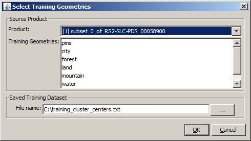
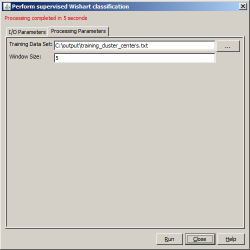

Supervised Wishart Classification Operator
Terrain
classification is one of the most important applications of
polarimetric synthetic aperture radar. The Supervised Wishart
Classification technique classifies the image into a number of clusters
using Wishart distance measure and user provided training data.
Different from the Unsupervised Wishart Classification, in the
Supervised Wishart Classification the cover types to be classified are
selected by the user. In another word, the clusters (for example,
forest, water and urban) and their locations are known in advance. This
information is provided to the classifier through user selected
training data set. The training set is selected for each class based on
the ground truth map or scattering contrast differences in PolSAR
images. User locates these areas on the image and guide the classifier
with the help of these training sites to learn the relationship between
the data and the classes. Finally, the image pixels are classified into
one of the clusters based on their Wishart distances to the center of the cluster.
Therefore, this operator consists of two major processing steps:
- Supervised Training
- Wishart Classification
Supervised Training
To perform the supervised
training, the following steps should be followed:
- Display an intensity image on screen using RSTB (see Figure 1. a subset of RadarSAT-2 data for San Francisco for example);
- Select areas as training data sets using the "Create a new
geometry container" and other drawing tools on the right hand side of
the tool box (in Figure 1, 8 areas for 5 classes have been selected);
- Select "Supervised Classification Training" from the
"Polarimetric" menu, then highlight the training geometries and click
on "OK" to start the training. The center for the coherency matrices of
the pixels in each user identified class is computed and save in a text
file in user specified directory.

Figure 1. Training data set: 8 areas for 5 classes
Note that this processing step may take some time depending on the
number of classes, the number of areas and the size of the selected
areas.
Supervised Wishart Classification
In this processing step, all image pixels are classified to one of the clusters based on their
Wishart distances to cluster centres.
The cluster centre Vm for the mth cluster is the average of the coherency matrices of all pixels in the cluster. Mathematically it is given by
The Wishart distance measure from coherency matrix T to cluster centre Vm is defined as the following:
where ln() is the natural logarithm function, |.| and
Tr(.) indicate the determinant and the trace of the matrix respectively.
Input and Output
- The
input to this operator can be qual-pol data or the coherency / covariance
matrix generated by Polarimetric Matrix Generation operator.
- The
output of this operator is supervised_wishart_class band with pixel
values being integers indicating the cluster indices. User can give
different colour to different cluster by using the RSTB "Colour
Manipulation" tool. (see Figure 2 for the classification result of the
example given in Figure 1).

Figure 2. Classification result
Parameters Used
For Supervised training, the following processing parameter are needed (see Figure 3):
- Product: the source product
- Training Geometries: user identified classes
- File name: name for the text file in which cluster centers are saved

Figure 3. Dialog box for Supervised training
For Supervised Wishart classification, the following parameters are used (see Figure 4):
- Training Data Set: the text file in which the computed cluster centers are saved
- Window Size: dimension of sliding window for computing mean covariance or coherency matrix

Figure 4. Dialog box for Supervised Wishart classification
Reference:
[1] Jong-Sen Lee and Eric Pottier, Polarimetric Radar Imaging: From Basics to Applications, CRC Press, 2009